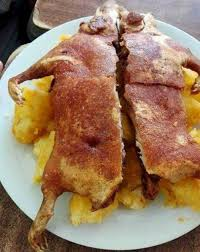

Viajes
Soy una persona que le gusta mucho viajar, a lo largo de mi vida e llegado a conocer 15 regiones del Perú, tambíen e llegado a estar en Bolivia y Chile, aún no e tenido la oportunidad de tener muchos viajes internacionales pero espero que mediante cumpla mis objetivos profesionales pueda permitirme viajar.
Fotos de algunos viajes:
.jpg "Jaén")


Volver arriba
Pasatiempos
Mis pasatiempos favoritos son escuchar música y hacer música, toco varios instrumentos como son guitarra, charango, ukulele, armonica, saxo.
Tambíen me gusta ver peliculas, no tengo un genero cinematografico preferido, me gusta ver partidos de futbol y tambíen practico diferentes lenguajes de programación
Volver arriba
Comidas favoritas
Soy una persona que come de todo, disfruto de la comida en general pero si hablamos de lo que más me gusta podria decir que mis platillos favoritos son 3: Ceviche, papa a la huancaina y cuy con papa.
Fotos referenciales de comida


Volver arriba